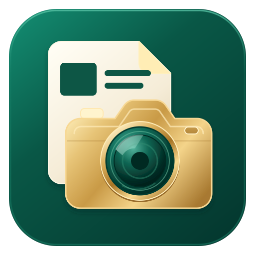

Tambah berita di SUHU
Isi detail, unggah narasi dan dokumentasi, lalu simpan. SUHU menyiapkan folder berita dan memperbarui rekap.
- SUHU
- Google Drive
- Google Sheets

suhu.SUPER HUMASRUANG KERJA TIM HUMAS
Dari bahan berita sampai tautan publikasi.
SUHU menyatukan alur Google Drive dan Google Sheets dalam satu aplikasi Windows.
DARI BAHAN, MENJADI CERITA
Versi pengembangan 0.6.54 masih digunakan untuk pengujian. Akses Google untuk pengguna umum belum dibuka; informasi unduhan akan ditambahkan setelah rilis siap.
01 / ALUR YANG MENGIKUTI TIM
Tim tetap bisa bekerja dengan cara yang sudah dikenal. Rekap berita mengikuti bahan yang tersimpan.
Isi detail, unggah narasi dan dokumentasi, lalu simpan. SUHU menyiapkan folder berita dan memperbarui rekap.
Folder dan bahan yang disiapkan langsung di Drive diperiksa otomatis. SUHU menyinkronkan berita yang siap diproses ke rekap.
Pemantauan berjalan saat SUHU terbuka atau diminimalkan. Sinkronisasi mengikuti struktur folder dan izin Google yang tersedia.
02 / SAMPAI SIAP DIBAGIKAN
Narasi, Dokumentasi, dan Desain memiliki folder masing-masing. Berita yang belum lengkap bisa dilanjutkan kemudian.
Jenis berita, status, checklist bahan, dan tautan publikasi ditampilkan bersama. Arsip awal 2026 dipertahankan sebagai tampilan baca saja.
Pilih berita di situs PPID atau postingan Instagram, tinjau tautannya, lalu simpan ke rekap. Tautan bisa diperbaiki jika diperlukan.
Notifikasi Windows dan menu lonceng mencatat penambahan atau perubahan. Riwayat aktivitas membantu tim melihat siapa yang melakukan tindakan lewat SUHU.
03 / AKSES YANG JELAS
SUHU terhubung ke Google Drive dan Google Sheets menggunakan akun Google yang masuk. Login tidak memberikan izin baru terhadap file: akses mengikuti izin berbagi yang ditetapkan pemiliknya.
Data berita disimpan pada sumber Google tim. Pilihan “Ingat akun” menyimpan sesi Google dengan enkripsi Windows di perangkat. Riwayat perubahan dapat mencantumkan nama dan email pelaku agar tindakan tim bisa ditelusuri.
Baca kebijakan privasiADA YANG INGIN DITANYAKAN?
Untuk bantuan aplikasi atau pertanyaan tentang data dan akses.